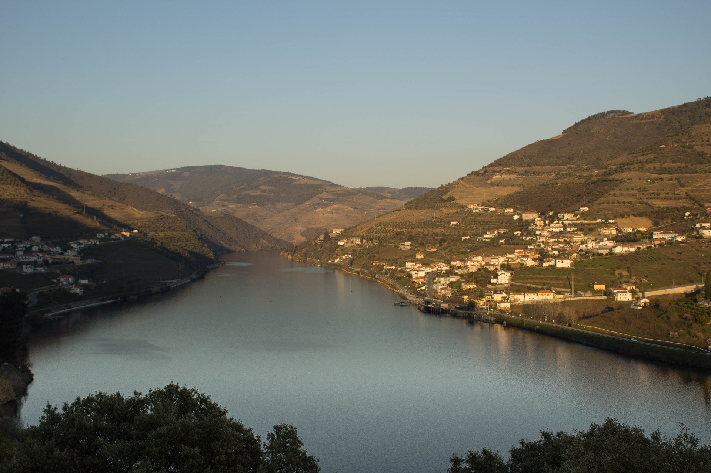
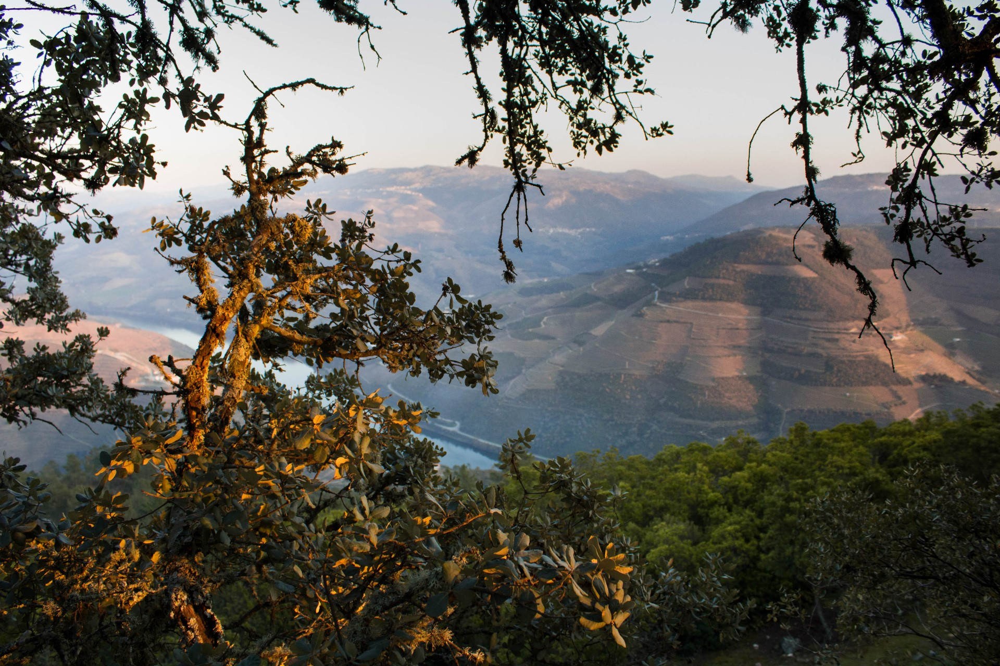

CyberDouro? O que é?
Alguma vez pensaste que um lugar remoto não poderia receber uma conveção gaming/tecnológica?
Ora, pensaste mal (estúpido)!
Com este evento vamos provar que se pode fazer coisas interessantes em locais outrora desconhecidos ou mais isolados.

Região do Douro
É do conhecimento geral que a região demarcada do Douro prima pelas suas paisagens rurais marcadas pelo rio e pelo trabalho do Homem, os seus vinhos únicos, conhecidos e classificados em todo o mundo e pelas raízes fortes de videira da sua cultura e das suas gentes, que por entre socalcos, margens e montanhas fazem chegar a sua beleza a todos os cantos deste país e mundo.
